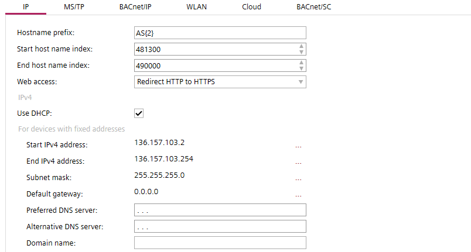
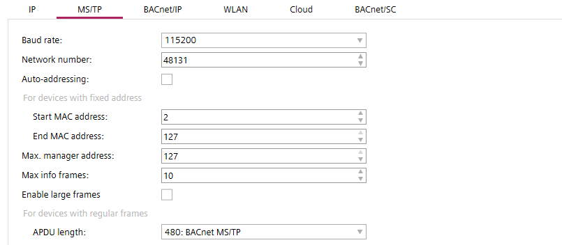
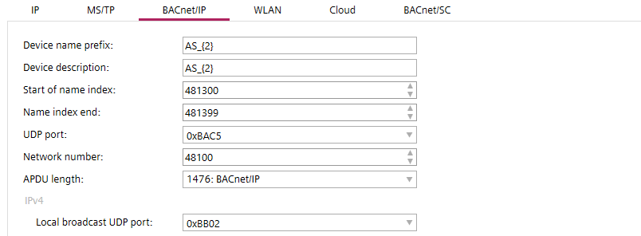
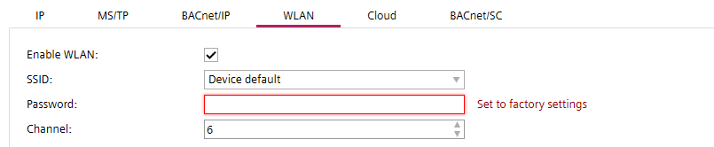
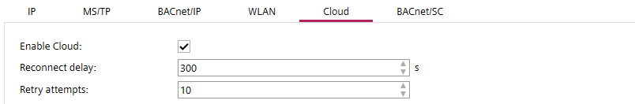
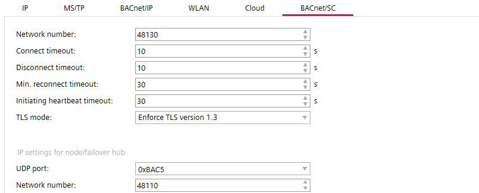

Address defaults
The Address defaults task allows you to configure the default network settings of your project.
1 | Task selector | 2 | IP tab |
3 | MS/TP tab | 4 | BACnet/IP tab |
5 | WLAN tab | 6 | Cloud tab |
7 | BACnet/SC tab |
|
|
The following properties must be unique in the project for all devices:
- Device name
- Device instance number
- IP address
- MS/TP address (combination of MAC address and network number)
- Serial number (must be unique or empty)
Checking for duplicate device properties
① Task selector
Task | Description |
|---|---|
Information | |
Address defaults | |
Device defaults | |
User profiles | |
Naming defaults | |
Localization | |
I/O assignment templates | |
Number ranges | |
Certificates |
② IP tab

Setting | Description |
|---|---|
Hostname prefix | Enter a prefix for the hostname and a number for the leading zeros. The maximum number of characters is 15. Allowed characters are a-z, A-Z, 0-9 and "-". Default is "AS". |
Start host name index | First usable hostname index. Default is 1. |
End host name index | Last usable hostname index. Default is 4194302. |
Web access | Determines the HTTP connection setting of the Web interface port. HTTP uses port 80. HTTPS uses port 443.
|
| If selected DHCP (Dynamic Host Configuration Protocol) is used to automatically configure the device port. Note |
Start IPv4 address | The first numerical label that is assigned to the device port. |
End IPv4 address | The last numerical label that can be assigned to the device port. |
Subnet mask | Specifies the subnet within the larger network. |
Default gateway | Specifies a node on a TCP/IP network that serves as an access point to another network. |
Preferred DNS server | The address of the preferred domain name server. Routing information used for cloud connection if DHCP server is not available. |
Alternative DNS server | The address of the alternative domain name server. Routing information used for cloud connection if DHCP server is not available. |
Domain name | Name of the domain e.g. siemens.net. When a domain is set up, the devices can be addressed with the domain name, for example AS_01.siemens.net. |
 Use DHCP
Use DHCPAutonumbering – Name pattern
Names and descriptions of some of the objects can be automatically extended by a number. The name pattern is defined by a fix part (e.g. AS_ for automation stations) and an auto-number part (e.g. {2} for 2 leading zeros).
Example patterns:
- "B_{2}"
Resulting in names as "B_01", "B_02", "B_09", "B_10", "B_99", "B_100" - "{3}_B"
Resulting in names as "001_B", "002_B", "009_B", "010_B", "999_B", "1000_B" - "B_{1}-ABC"
Resulting in names as "B_1-ABC", "B_2-ABC", "B_9-ABC", "B_10-ABC" - ""
Resulting in names as "1", "2", "9", "10" - "B_"
Resulting in names as "B_1", "B_2", "B_9", "B_10"
NOTICE

Unprotected physical network access (HTTP) opens the possibility to interrupt or hijack communication. Unauthorized access to customer sites may result in system malfunctions or automation stations failures.
High fixing costs and a loss of reputation.
- Do not allow http connections. Only use secure connections (https).
③ MS/TP tab

Setting | Description |
|---|---|
Baud rate | Specifies the rate at which data is sent to the bus. Default is 38400 to 76800.
|
Network number | Number that identifies the network. |
Auto addressing | When activated the following MAC address settings are obtained automatically:
|
Start MAC address | The first MAC address for the MS/TP port. |
End MAC address | The last MAC address for the MS/TP port. |
Max manager address | Set the Max manager address to prevent the passing of the token to unused MAC addresses situated after the manager. |
Max info frames | The maximum number of information requests to other devices. |
| Extends the frame length in MS/TP trunk of router. |
Max APDU length | Specifies the maximum length of the APDU for network devices in Bytes. The following values are available:
|
 Enable large frames
Enable large frames
Enable large frames checkbox is applicable in MS/TP property of PXC5, PXC7, PXC4.M & DXR2.M devices only.
④ BACnet/IP tab

Setting | Description |
|---|---|
Device name prefix | Enter a default prefix and a number for the leading zeros for newly created devices. |
Device description | Type a description and a number for the leading zeros for devices. |
Start of name index | The first index number for the device when connected to the network. |
Name index end | The last index number for the device when connected to the network. |
UDP Port | Specifies the UDP port in hexadecimal format from BAC0 to BAD4. Default is BAC0. |
Network number | Specifies the network number |
Max APDU length | Specifies the maximum length of the APDU for network devices in Bytes. The following values are available:
|
IPv4 Local broadcast UDP port | UDP port for local broadcast setting (Default 0xBB02 = 47874). Local broadcast UDP is used for messages that do not need to be routed by BBMD, for example, for grouping commands. |
⑤ WLAN tab

ABT Site allows for wireless connections to devices which have built-in wireless access points.
There is a WLAN time-out on the device. After 15 minutes idle time the wireless access point of the device shuts off. To manually re-enable the WLAN on the device, press the service button.
Make sure to change the default wireless password of the device (usually the serial number) during engineering. Any change of the device settings requires a full load of the device. Alternatively, you can activate the settings in Web interface after the usage of play/pause function for delta downloads.
Configure and download
Using play/pause function
Default project settings for devices with WLAN functionality. When you create a device, these default project settings are used. Modifications on the project settings at a later stage do not affect already existing devices. You can set the WLAN settings for each device separately in the Device details.
Details pane of the device version ≤ 1.5
Property | Description |
|---|---|
| Select to enable the WLAN port via the out-of-service BACnet property. |
SSID | Select the SSID used by the WLAN port of the device. The different options for SSID are the following:
|
Password | Set the password used by the WLAN port of the device. Max. 63 characters. To set the password to factory settings, chose Device default from SSID options list and confirm with Set to factory settings. To view the default factory settings, scan the QR code on the device. QR code information: WIFI:S:PXC4.E16_0000550;T:WPA;P:1400052738;; Determine manually: Use the information from the Date/Series/SN block: |
Channel | Set the channel used by the WLAN port of the device. |
⑥ Cloud tab

Configure the default project settings for cloud connectivity of your devices.
Property | Description |
|---|---|
| Select to enable the cloud port via the enable-connectivity BACnet property. If enabled, the device will connect automatically if internet is available. |
Reconnect delay | Set the reconnect delay time in seconds. |
Retry attempts | Set the number of retry attempts for the cloud object if connection is lost. |
⑦ BACnet/SC tab

What is BACnet Secure Connect?
Setting | Description |
|---|---|
Network number | Default network number when enabling secure connect port. Default is 55189. |
Connection timeout | Set the time limit before the connection attempts will be interrupted. Default is 10 s. |
Disconnect timeout | Request for disconnect from one device to another. After the specified time without answer the device considers that it is disconnected already. Default is 10 s. |
Min. reconnect timeout | Set the time limit before a reconnection attempt after a connection timeout. Default is 30 s. |
Initiating heartbeat timeout | If there is no communication for the specified time it will trigger the heartbeat request message to verify the connection is still active. Default is 30 s. |
TLS mode | Defines which TLS version is used:
|
UDP port | Specify the default BACnet UDP port for primary hubs. Default is 0xBAC5. |
Network number | Specify the IP network number for nodes/failover hubs. Default is 123. |